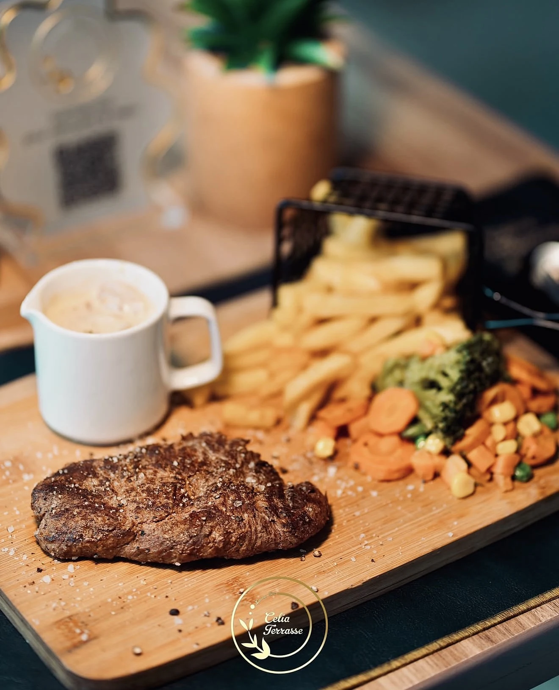

KINSHASA · GALLERIA MALLRESTAURANT & LOUNGE BAR
LE CARNET DES SAVEURS
Une table.
Mille envies.
Des saveurs à découvrir.
Des instants à prolonger.
la carte↗
CUISINE · SUSHI · COCKTAILSFAITES DÉFILER POUR SAVOURER ↓
QUATRE UNIVERS. UNE SEULE ENVIE : SE FAIRE PLAISIR.
TOUTES LES SAVEURS, AU FIL DE LA PAGE
La carte, tout simplement.
L’ALBUM CÉLIA
Le plaisir
se regarde aussi.
Vos assiettes. Vos instants.
L’univers Célia, en images.
Faites défiler les photos →
ON VOUS GARDE UNE PLACE.
Les beaux moments
commencent ici.
Galleria Mall · 3e étage · Kinshasa
+243 971 111 109 ↗Télécharger la carte PDF ↓